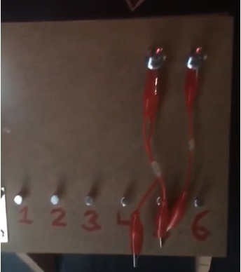
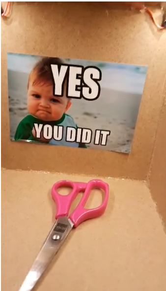
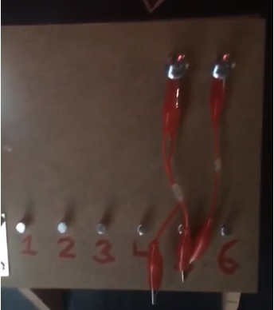
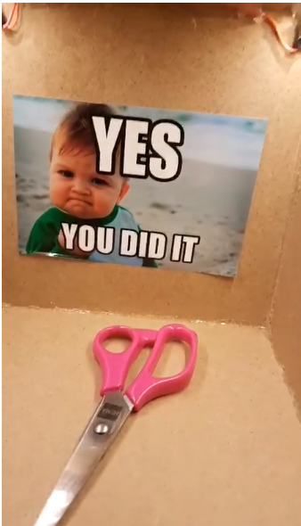
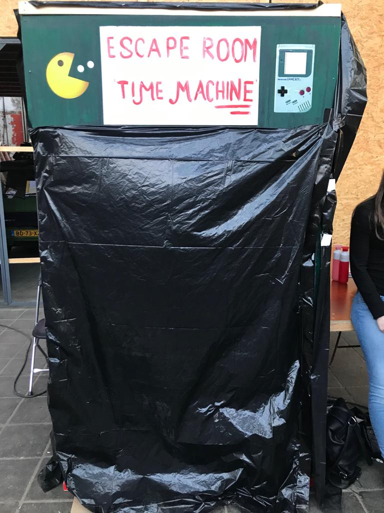

Product
Over het product
Het product dat wij, studente van de Haagse Hogeschool, hebben gemaakt was een escape room. Het product zorgde ervoor dat mensen door samen te werken uit een "kamer" moesten komen. De raadsel, spellen en kluis waren interactief. Dit vanwege onze toegewezen topic "Playful interaction". In dit topic was tijdens hoorcolleges en workshops duidelijk geworden dat het interactief maken van een product meestal tot positief gedrag leidt. Dit was terug te zien in onze escape room, waarin alle spellen interactief waren, waardoor de spelers gedreven werden om het juiste antwoord te vinden en een beloning te krijgen. Zo gaven we de spelers door middel van lichtjes en geluidjes een extra interactieve ervaring. Uit de hoorcollges kwam ook goed naar voren dat een playful interaction meestal een goed verhaal achter het spel heeft. Dit maakt onze escape room een soort tijdmachine die terug in de tijd gaat. Zo hebben we de interactieve spellen gebasseerd op de spellen van vroeger. PingPong, het elektrospel en de rebus zijn vrij oude spellen. Dat het thema terug in de tijd was, was ook te zien in het ontwerp. Zo begint de escape room tegen de klok in en hangen er neppe klokken aan de muur.
Hoe het werkt
Het product werkt bijna als een echte escape room. Zo is er een kleine kamer gebouwd, waarin er drie muren zijn en een "deur". Op elke muur werd er een spel getoond dat moest leiden tot het winnen van een letter dat uiteindelijk deel uit zou maken van de code van de kluis.
Op de eerste muur werd het zelfgemaakte spel PingPong getoond. Dit spel hebben we interactief gemaakt, doordat de speler met zijn handen echt iets kan aanraken er waren namelijk voor iedere speler twee pijlen weergegeven op de muur. Met die pijlen kon de speler het spel spelen.
Wanneer een speler als eerst 7 punten heeft gescoord werd er op een scherm de code C getoond.
Op de tweede muur werd een combinatie spel getoond. Hierbij was het de bedoeling dat de spelers aan de hand van de hints op het boord en en de muren de juiste combinatie wisten te vinden. Zo hadden we gedacht om de juiste letter bij de juiste cijfer te vinden. Dit maakte het spel namelijk wat lastiger. Zo moest de ene tang op de letter D en de andere tang op de cijfer 4. Vervolgens scheen er een lampje om positieve feedback te geven.
Op de laatste muur werd een klassieke rebus spel getoond. Dit om in de sfeer van vroeger te blijven.
De uitkomst van de rebus was de laatste deel van de code, namelijk de letter F.
Met de drie codes ging de speler naar de kluis die ook op de laatste muur hing. Bij de kluis kwam wederom het cijfer en lettercode aanbod. Dit hadden we gedaan, zodat het spel niet al te makkelijk zou worden. Zo moest de speler de drie ontdekte letters bij de kluis omzetten in cijfers, bijvoorbeeld A=1, B=2, C=3, enzovoort.
Wanneer de speler het juiste antwoord wist, moest hij de juiste knijper op de juiste cijfer zetten en zou de kluis bij de juiste combinatie opengaan, namelijk C=3, D=4 en F=6.
Vervolgens zat er een schaar in de kluis waarmee de speler de tiewrap van de "deur" kon doorknippen.
 



Dan uiteindelijk de "deur". Onze deur was een grote zwarte doek dat aan het hok was vastgemaakt en alleen vanuit één kant open gemaakt kon worden. Dit doek werd vastgemaakt met tiewrap, zodat de spelers niet uit het hok konden.
Foto gemaakt door Medy.
Eind video
Reflect
Na twee weken lang gewerkt te hebben om een top concept neer te zetten ben ik wel tevreden met het product dat ons projectgroep heeft neergezet. Dit met de reden dat we als groep goede en minder goede concepten hadden en niet alle concepten konden worden waargemaakt. Dit had geleid tot vertragingen en geen goedkeuring van onze docent. Dit maakte het voor ons erg uitdagend en lastig. Maar door ons doorzettingsvermogen en goede samenwerking hebben we toch op een concept kunnen komen en dit binnen 3,5 dagen kunnen uitvoeren. Waarvan we de technische technieken die we wilde gebruiken voor ons concept, zoals kluis en het spel PingPong, al eerder waren onderzocht en gemaakt. Omdat we binnen zo'n korte periode een mooi en goed product hebben kunnen neerzetten ben ik erg trots op ons werk.
De kwaliteit van het product was ruimvoldoende betreffende ons nivea. Zo hadden Medy en ik met behulp van een tutorial en onze eigen kennis van Processing het spel PingPong gemaakt. Daarnaast hadden Martijn en Femke met hun eigen kennis en die van de workshops de kluis gemaakt. Ook hadden we als groep besloten om een goed bouwplan te maken voor het hok en dit materiaal te kopen in de Gamma. Voor dit materiaal waren we wel 100 euro aan kwijt. Om het hok in elkaar te zetten hebben we ook professionele gereedschappen gebruikt.
Tijdens de labweken heb ik veel geleerd en gedaan. Het proces ging niet altijd even snel. Soms had ik tijd nodig om dingen uit te zoeken of na te denken wat de beste manier van handelingen kon zijn.
Ik heb dan ook vooral bezig gehouden met het touchboard en het maken van de spel PingPong. Dit had ik beide samen gedaan met Medy. Daarnaast heb ik me even goed ingezet in brainstormsessies en het bouwen van het hok.
In de eerste week had ik mijn tijd gespendeerd aan onderzoeken, brainstormen en uittesten van bijvoorbeeld het touchboard, interactieve spellen en Arduino.
In de tweede week was het vooral het maken van ons product. Dit deden we als groep samen.
Tijdens de labweken was ik in het begin erg gemotiveerd om aan de slag te gaan, omdat ik het onderwerp erg leuk vond en meer over wilde weten en zelf ook dingen wilde maken. Op het moment dat we een concept hadden was ik nog enthousiaster. Helaas ging mijn enthousiasme naar beneden toen we om feedback vroegen aan ons docent. Dit kwam vooral, omdat we, als groep, geen positieve feedback kregen en vooral op ons concept en werkwijze werden afgekraakt. Dit gaf onze groep demotivatie, waardoor we op een moment niet wisten wat te doen.
Gelukkig hielden we het met elkaar als groep wel gezellig en probeerde we uit onze put te komen door te brainstormen en onze kennissen te verzamelen. Dit bracht ons op een goed concept wat wel werd goedgekeurd. Vanaf dit moment steeg de motivatie en heb ik in ieder geval de labweken met een leuke en leervolle ervaring afgesloten.